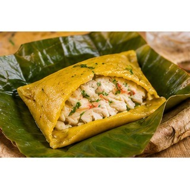

Reseña del cantón
Palenque es un cantón de ambiente principalmente rural, donde la agricultura y la ganadería tienen un papel importante. Sus habitantes conservan prácticas y expresiones de la cultura montuvia, presentes en las fiestas populares y la vida comunitaria. Los campos de cultivo y los pequeños centros poblados forman parte de su paisaje. El comercio local está ligado a la producción agropecuaria.
Población
24.838 habitantes (Censo de Población y Vivienda 2022).
Parroquias
Palenque (cabecera cantonal).
Economía y cultura
La agricultura y la ganadería son parte de las actividades de muchas familias de Palenque. La convivencia comunitaria, sus fiestas y la gastronomía tradicional contribuyen a conservar la identidad montuvia del cantón.
Alcalde
Jordy Carriel Navarrete — período 2023–2027.

Fuente: Directorio oficial de alcaldes y alcaldesas de AME.
Platos típicos
Bollo de pescado, chanfaina, salchicha seca y cazuela de pescado.

Estas preparaciones se documentan como parte de la gastronomía local. Su disponibilidad y preparación pueden variar entre comunidades.
Lugares turísticos
Riberas y paisajes del río Palenque, además de las zonas agrícolas y espacios tradicionales de la cabecera cantonal.
Mapa del cantón
Mapa de Google Maps centrado en el cantón: